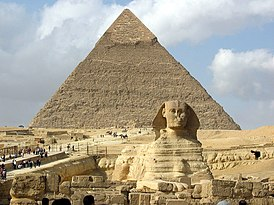
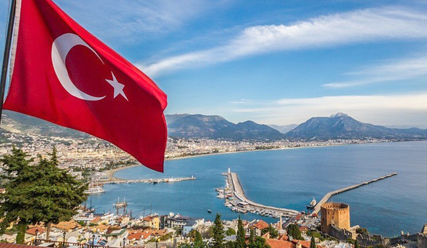
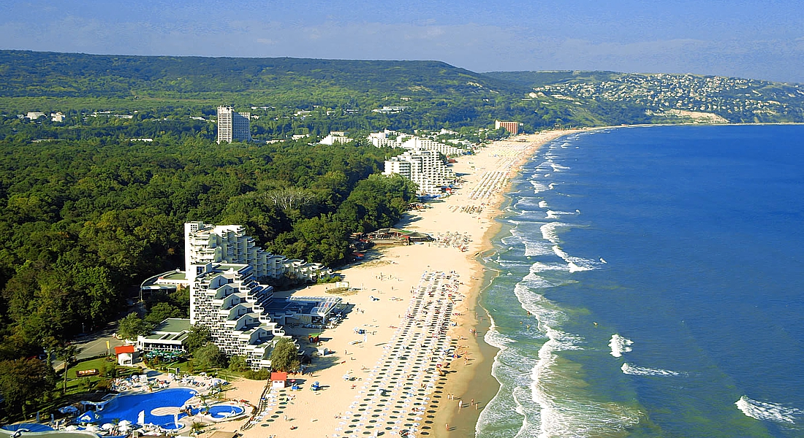

География путешествий
 Угадайте, чем Египет похож на елку? Правильно! Он тоже зимой и летом одним цветом — цветом бирюзового моря, яркой подводной жизни и пестро одетой толпы туристов, в том числе из России. Изрядное число наших отдыхающих привыкло считать Египет круглогодичной «второй дачей», куда можно вырваться на выходные позагорать и понырять. Историческая «экскурсионка» — в комплекте: пирамиды и Луксор ежедневно осаждают толпы путешественников, желающих прикоснуться к вечности. Ну а о дайверах и говорить нечего: их здесь по три десятка на каждый риф.
 Турция — это бюджетные и молодежные Кемер и Аланья, семейный Сиде и активный Белек, престижная Анталия и барный Мармарис, уединенный Фетхие и масса менее известных (чем и привлекательных) курортных местечек. Турция исторически-экскурсионная — это легендарная Троя (к слову, визит внутрь коня входит в обязательную программу посещения), античный Эфес с руинами библиотек, театров и храмов, травертиновые террасы Памуккале и ванна Клеопатры (где только не купалась эта неугомонная царица!), первый в мире мавзолей, как и следует из названия, царя Мавсола, останки Ликийского царства и многое другое.
Болгарию и туристов из России связывает давняя, еще доперестроечная дружба. И, надо сказать, причины ее возникновения — красивая природа, обширная «экскурсионка», теплое море и гостеприимство местных жителей — по-прежнему налицо. При этом многие отели сегодня посвежели после ремонта, сервис улучшился и, конечно, подросли цены на туры. Но все-таки не настолько, чтобы страна стала дорогим направлением, недоступным «массовому туристу». Так что за сравнительно недорогим семейным отдыхом, особенно с детьми, и столь же недорогим и качественным лечением многие путешественники и сейчас отправляются именно в Болгарию.